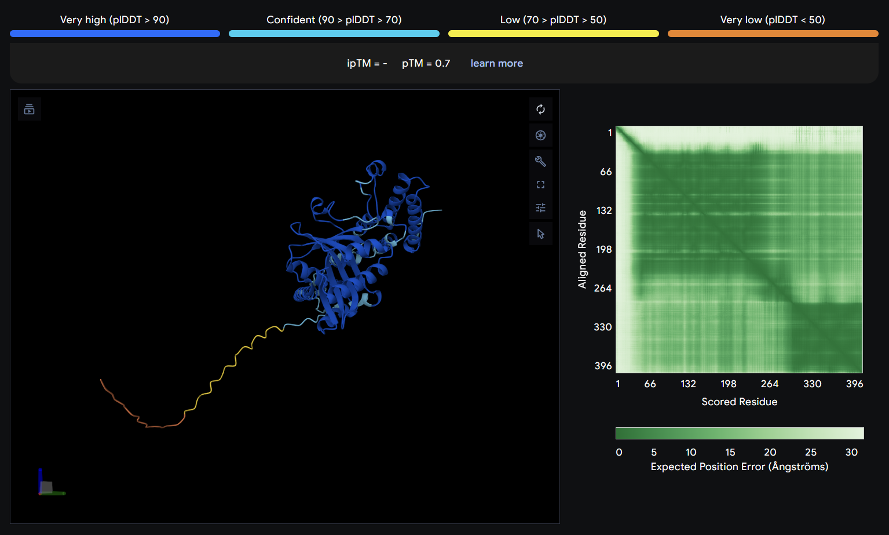

前言
AlphaFold 预测会给你5个结果，其中编号最小的一般是最好的，在这里，我们主要看输出信息的 PAE 矩阵，plDDT，pTM与ipTM得分，这几个指标详细的描述了预测蛋白质中每一部分的可信度。
1. 数据结构
不管是在线版还是离线版，下载下来的数据文件都是一样的
.
├── ex_1_confidences.json
├── ex_1_data.json
├── ex_1_model.cif
├── ex_1_summary_confidences.json
├── TERMS_OF_USE.md
├── ranking_scores.csv
├── seed-1_sample-0
│ ├── confidences.json
│ ├── model.cif
│ └── summary_confidences.json
├── seed-1_sample-1
│ ├── confidences.json
│ ├── model.cif
│ └── summary_confidences.json
├── seed-1_sample-2
│ ├── confidences.json
│ ├── model.cif
│ └── summary_confidences.json
├── seed-1_sample-3
│ ├── confidences.json
│ ├── model.cif
│ └── summary_confidences.json
└── seed-1_sample-4
├── confidences.json
├── model.cif
└── summary_confidences.json
5 directories, 21 files
一般我们就看最外面的最优结果，其中 PAE 矩阵文件和 plDDT 片段得分矩阵数据记录在_data.json文件中，pTM 和 ipTM得分记录在 _confidences.json文件中。单次对接结果所有文件计分在ranking_scores.csv文件中。具体结果在.cif中，我们可以使用 Pymlo 等软件进行预览。
2. PAE 矩阵
2.1 查看方式与工具
在线版预测中，可以直接在 AF 官网结果界面中看到所有的信息。
而对于离线版，我们则需要借助一些专门查看 PAE 矩阵的网站工具，例如https://pae-viewer.uni-goettingen.de/，上传加载.cif和_data.json就可以进行预览了。
2.2 PAE 矩阵意义
PAE 矩阵的横坐标和纵坐标都是一个个氨基酸，纵坐标为参考氨基酸，横坐标是以该参考氨基酸作为参照物时，其预测的氨基酸与真实位置的不确定性位置大小，单位为 埃斯特朗 $Å$（$1Å = 1\times 10^{-10}m $）。该值越大，说明相对于参考氨基酸，这个预测的氨基酸位置不确定性很大。
注意，PAE 矩阵不具备对角线对称性，当以氨基酸A作为参考时B的可能位置，和以氨基酸B作为参考时A的可能位置不具备相同的等价性。
对角线意义：以氨基酸自身作为参考，氨基酸自身的位置肯定是100%准确的，因此不确定性大小为0$Å$。
3. 得分
plDDT 得分为片段相较于蛋白整体的可信度，我们会在三维浏览时结合 PAE 一起查看。当分子结合在低 plDDT 得分片段区域时，解读需要谨慎。
pTM 得分是预测整体的得分，值越大越好，一般大于 0.8 时才有较大的研究价值，ipTM 得分只会在做分子互作时才有，表示互作可信度，值越大越好。
在后续我们通过 Pymol 等软件去寻找相互作用的可能位点，详细请参考其它文章。